Designing Bulk GTIN Search and Task Creation for Kroger's Item Management Platform
A design-focused project on the same platform: building a bulk search flow and inline task creation, so a Signage Specialist checking hundreds of items at once could act on what they found without leaving the results page.
What I did
I designed the bulk GTIN search and inline task-creation flow for Kroger's item-management platform.
A New Capability
Bulk GTIN search didn't exist on the platform. I designed it from scratch, built entirely within Kroger's existing design system so it launched feeling native.
2 Input Patterns
Provided two candidate bulk-entry directions, both built to production-ready fidelity, so the team could choose based on development feasibility.
One Connected Flow
I designed the end-to-end flow from bulk search to task creation, so specialists can search, select items, and create tasks all on one page instead of switching to a separate flow.
Built to Generalize
Designed for Signage Specialists first, then generalized for any user group that needs to reconcile a list of items.
A high-priority gap in the new platform
Signage Specialists need to check the status of many items at once, hundreds of GTINs at a time. The legacy systems technically let someone work through a list like that, but the interfaces were dense and unforgiving, and doing it that way was slow and mentally exhausting.
The new, modernized item-management platform hadn't built any equivalent yet: bulk GTIN search is not part of the MVPmost specialists rarely needed. As specialists migrated onto it, that gap became one of the highest-priority features on the roadmap for the upcoming quarter.
The capability was designed for Signage Specialists first, but the underlying need isn't specific to that role: any user group that has to reconcile a list of items against the platform runs into the same ceiling, so this was designed to generalize beyond Signage.
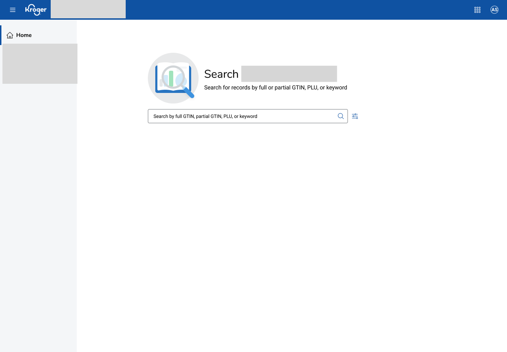
Learning how the work actually gets done
Before designing anything, I talked to SMEs, the user research team, and product designers who'd worked adjacent to this problem before, to understand what already existed and where the actual gaps were.
Current workflow: legacy systems that wear people down
Sitting with the current workflow confirmed what research and SMEs had already flagged: the legacy systems specialists still relied on, from mainframe terminal screens to the platform's underlying product-information-management system, were dense and unforgiving, and made even routine, everyday checks feel slow and mentally taxing.
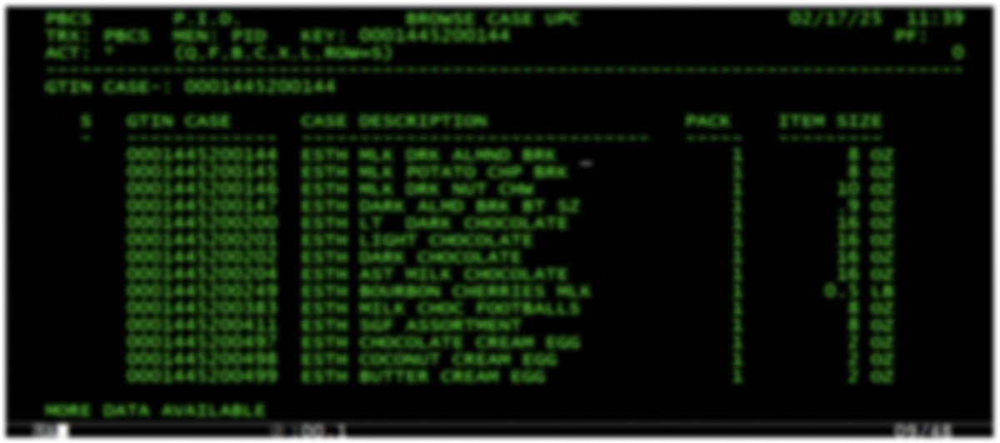
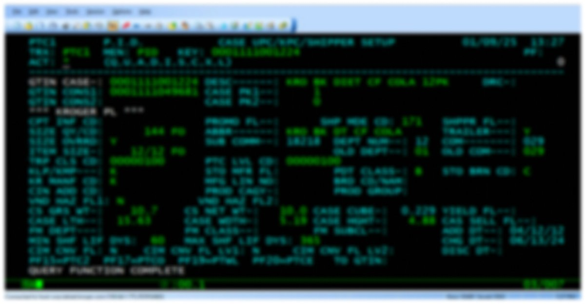
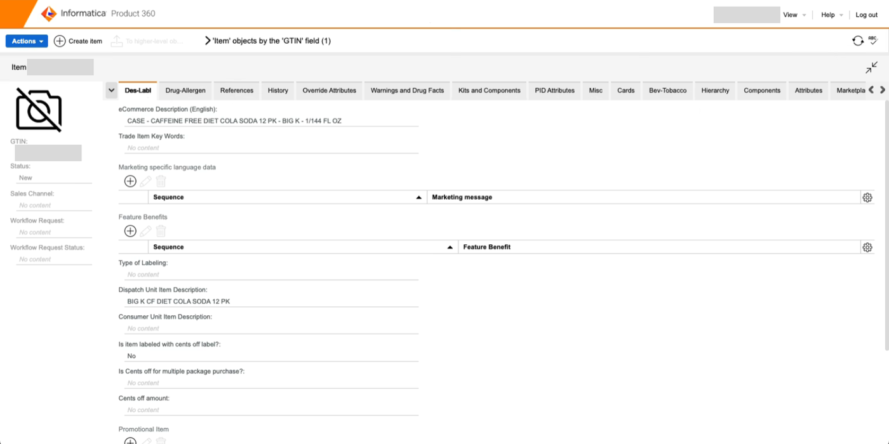
Checking with adjacent teams
I also reached out to product designers on adjacent teams to ask whether bulk GTIN search had already been designed for another product. There was no modern pattern to borrow from anywhere, internally or on an adjacent team.
Bulk GTIN Search
Since there was no existing bulk search pattern to build on, I leveraged Figma Make and Kroger's design system to rapidly prototype concepts. I then facilitated daily design reviews with senior designers to align on the best direction and technical feasibility. That process converged on two candidate solutions for how a specialist would actually enter a bulk list, each taken to a build-ready level of detail, so the call on which one shipped could come down to timeline and engineering feasibility rather than design preference alone.

Two directions
The first treated the input as a plain scrollable list: paste in hundreds of GTINs and scroll through them as a single block, close to how specialists already worked with pasted spreadsheet lists. The second split the search bar from the entered GTINs, turning each one into its own removable chip, so editing the list, spotting an entry, and removing it doesn't mean scrolling and re-editing a shared block of text. I compared both across the same set of states, from an empty input through a full, invalid list.
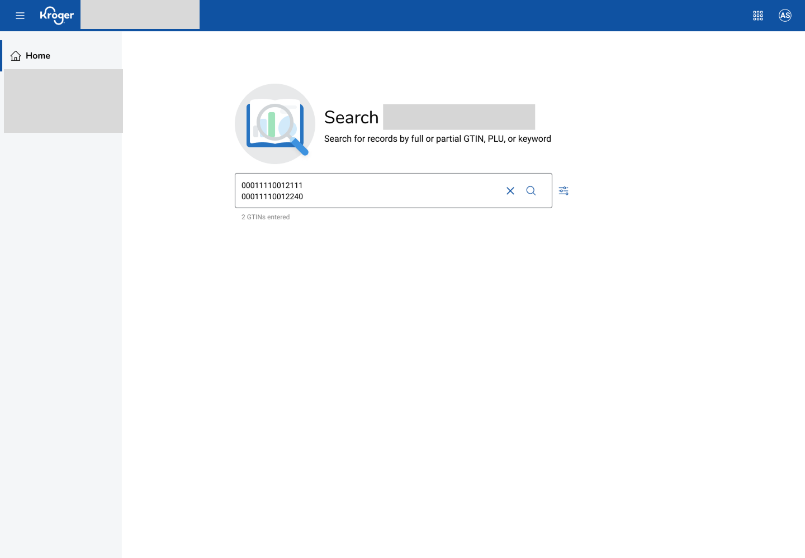
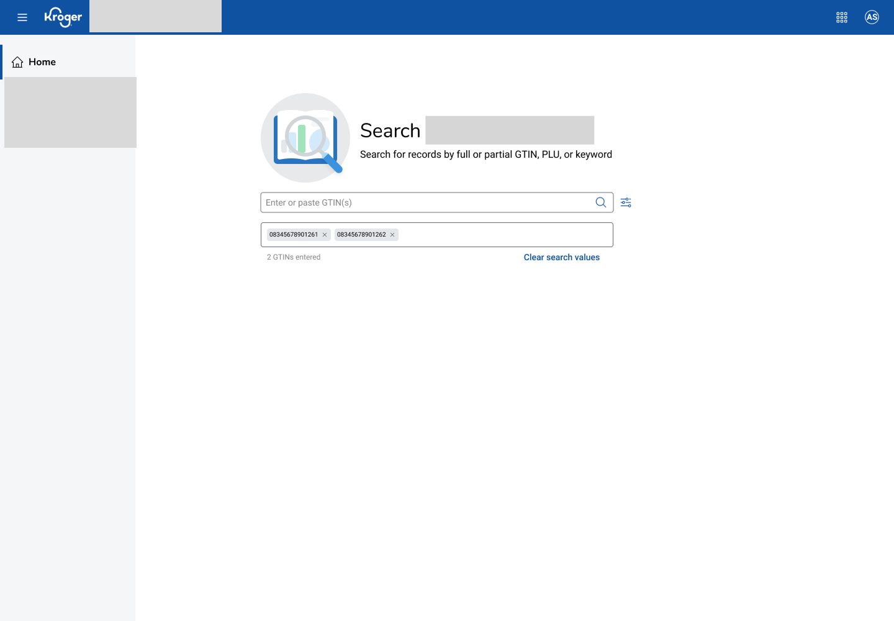

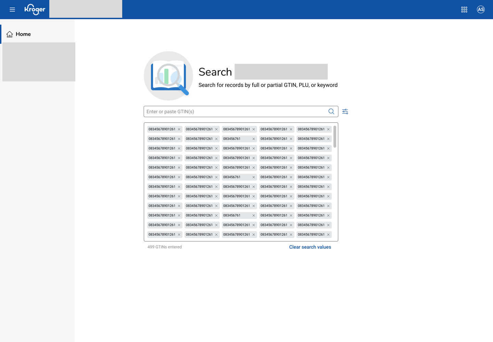
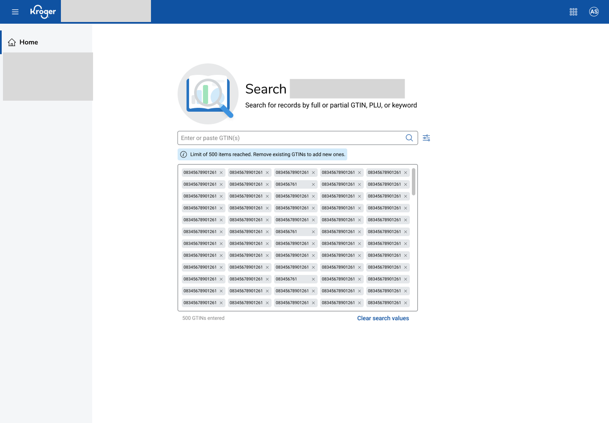
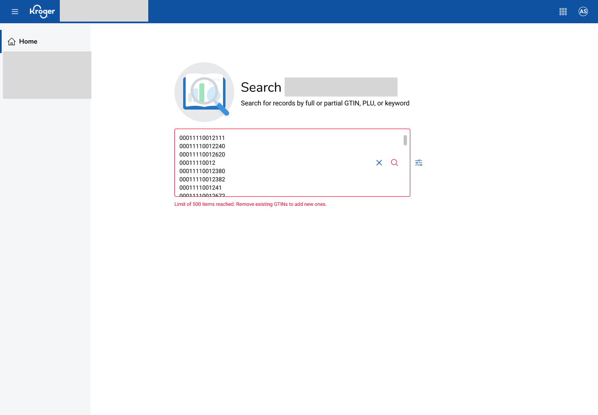
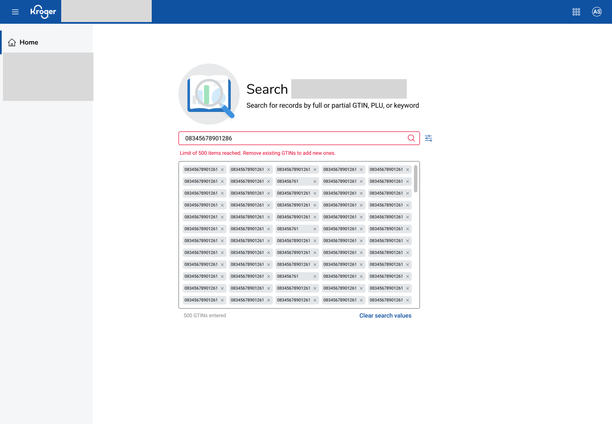
Neither direction was designed as the fallback. The scrollable list is faster to build and closer to how specialists already work with pasted lists day to day; the chip pattern costs more engineering effort but separates the search bar from what's already been entered, making it easier to review and edit the list than scrolling through one shared block of text. Keeping both at production-ready fidelity meant product and engineering could weigh that tradeoff against the quarter's roadmap and pick the one that fit, instead of the decision resting on design preference alone.
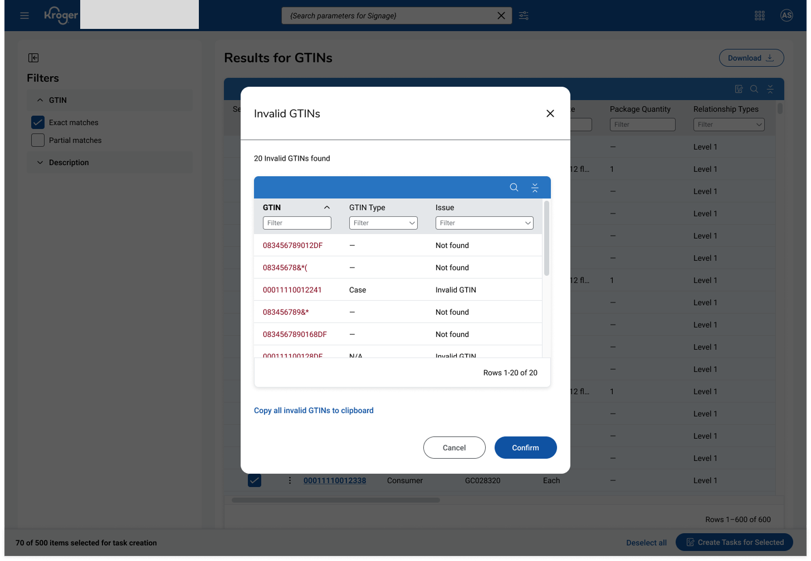
Task Creation
The second piece closed the loop: from the search results page, a specialist can select item(s) and create a task directly, instead of leaving the results to start a separate task-creation flow and losing their place in the list. Task creation on this page isn't owned by one team, though: the top toolbar belongs to the team that owns task management across the platform, while the results table and its bulk actions belong to the team that owns the item-record edit experience. So I designed two options, one aligned with each team's existing pattern, rather than forcing either one to break from what specialists already know from other parts of the platform.
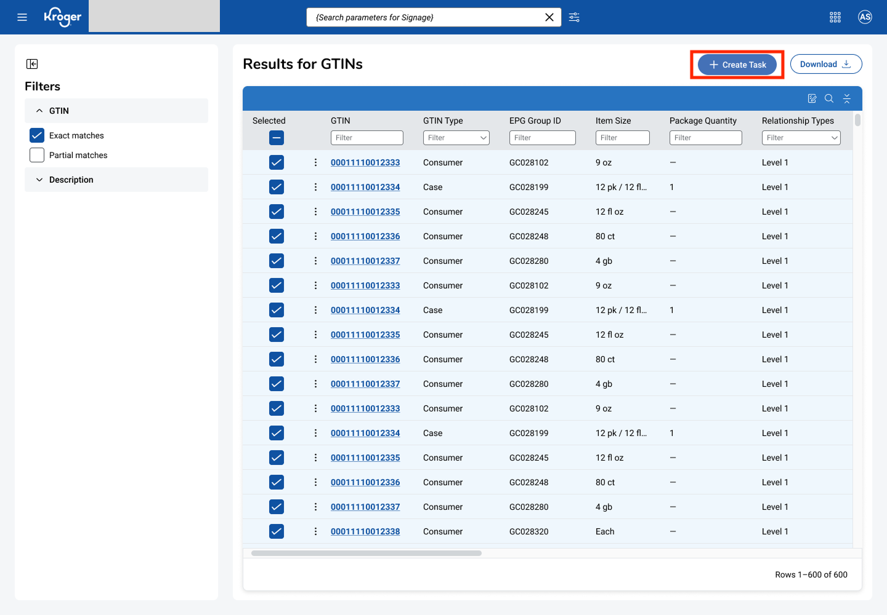
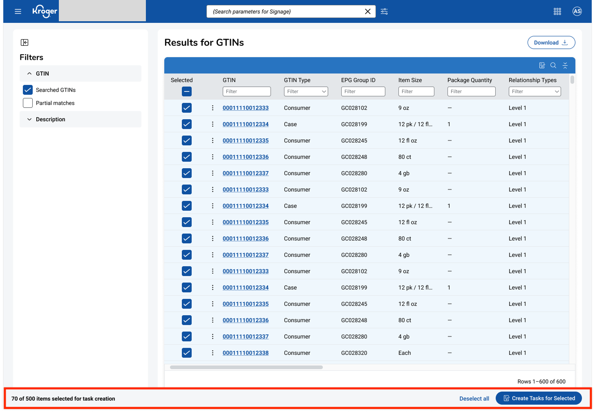
Both options do the same job: select item(s) from the results and create a task without leaving the page. Which one ships comes down to which team ends up owning this page long-term, since either choice keeps the flow consistent with a pattern specialists already recognize from elsewhere in the platform.
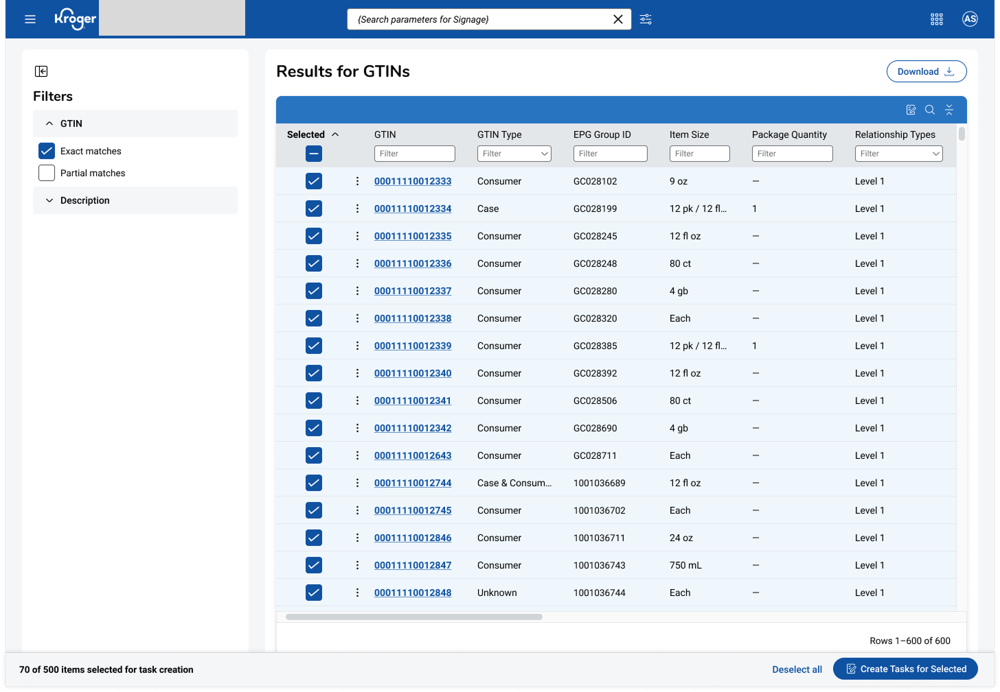
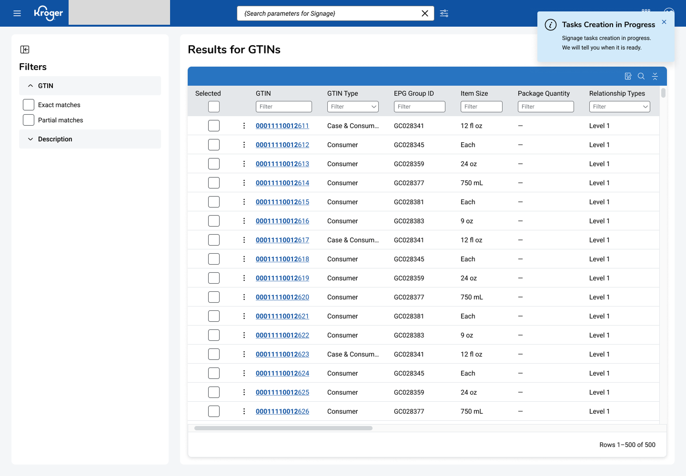
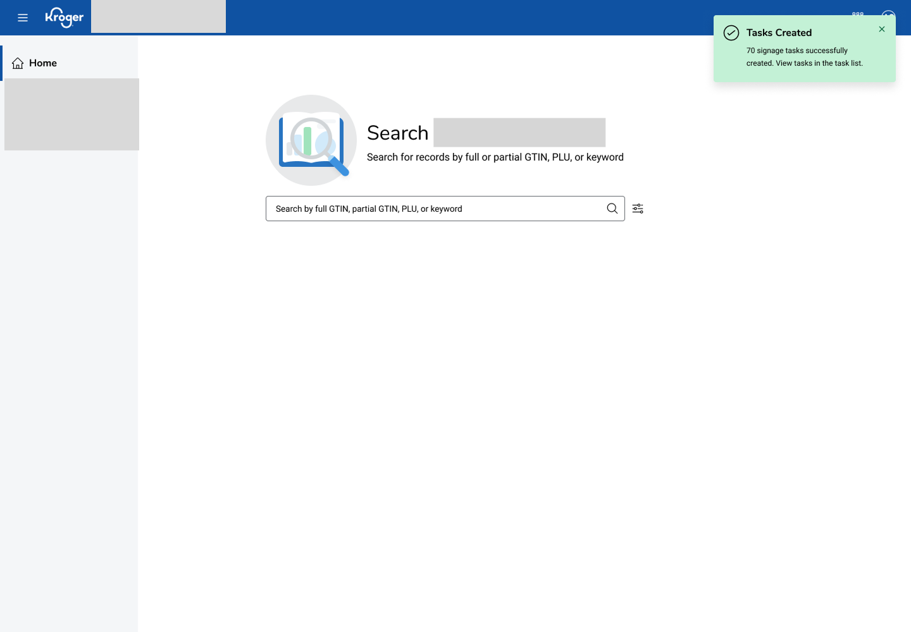
This project sits right next to the onboarding work: one taught people the platform, the other made the platform itself faster to use. Together they're the two halves of what "human-centered design" actually means to me: understanding where people get stuck, and then removing the friction based on feasibility.